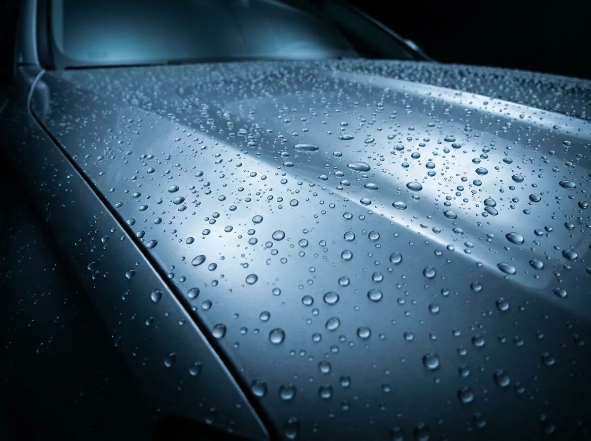

Keramikversiegelung · Bodensee & Thurgau
Schutz,
der bleibt.
Eine Keramikversiegelung ist die härteste Schutzschicht, die dein Lack bekommen kann: wasserabweisend, UV-stabil und chemieresistent — mit 3–5 Jahren Schutz statt Wachs, das nach Wochen verschwindet.
Was die Versiegelung bringt
- 3–5 Jahre Lackschutz — statt wenigen Wochen wie bei Wachs
- Starker Abperl-Effekt: Wasser, Schmutz und Insekten haften deutlich weniger
- UV-Schutz gegen Ausbleichen und Vergrauen des Lacks
- Tiefenglanz, der den Neuwagen-Zustand übertrifft
- Leichtere Wäsche — der Pflegeaufwand sinkt spürbar
Erst die Politur, dann die Keramik
Eine Versiegelung konserviert exakt den Zustand, den sie vorfindet — inklusive aller Swirls und Kratzer. Darum gehört zu jeder Keramikversiegelung bei Shark Surface eine mehrstufige Lackpolitur: Zuerst wird der Lack dekontaminiert und aufpoliert, bis er makellos ist. Erst dann kommt die Keramikschicht darüber und versiegelt dieses Finish für Jahre.
Applikation und Ablüftzeit brauchen Sorgfalt — in der Regel ein bis zwei Arbeitstage. Abfertigung im Stundentakt gibt es hier nicht.
Häufige Fragen
Wie lange hält eine Keramikversiegelung?
Bei fachgerechter Applikation und richtiger Pflege 3–5 Jahre. Entscheidend sind die Wäsche (Handwäsche statt Bürsten-Waschstrasse) und wie das Fahrzeug genutzt wird.
Was kostet eine Keramikversiegelung?
Im Concours-Level-Paket ab CHF 1050. Der genaue Preis hängt von Fahrzeuggrösse und Lackzustand ab — das Angebot gibt es nach einer kurzen Analyse vor Ort, ohne Überraschungen.
Warum muss der Lack vorher poliert werden?
Weil die Versiegelung alles konserviert, was darunter liegt — auch Kratzer. Erst die Politur schafft das makellose Finish, das sich zu versiegeln lohnt.
Wie pflege ich das Auto danach?
Schonende Handwäsche mit pH-neutralem Shampoo, keine Waschstrasse mit rotierenden Bürsten. Die wichtigsten Tipps gibt es bei der Übergabe persönlich.
Wie lange dauert die Anwendung?
In der Regel ein bis zwei Arbeitstage — inklusive Politur und Ablüftzeit. Den genauen Umfang legen wir bei der Analyse gemeinsam fest.